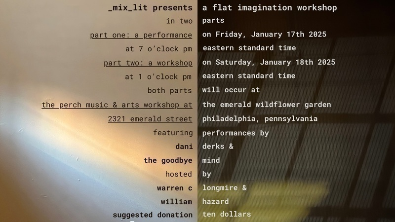

Warren Longmire and I will be hosting another flat imagination workshop next month, this time at The Perch Music & Arts Workshop at The Emerald Wildflower Garden, a venue I fell in love with after playing a show there with Sadie Dupuis, Chris Campanioni, olga mikolaivna, John Pinto, Ollie Becker, Edward Longo, Orah Ruth, and Mike Bagwell to kick off Mike's new Ghost Harmonics performance series.
This installment of the flat imagination workshop will include performances by dani derks and The Goodbye Mind as well as a beginner-friendly digital synthesis workshop using VCV Rack, led by dani. The idea is "here's a cool thing I made; here's how I made it and how you can make it too." So if you're in Philadelphia or nearby, please join us to see what cool things dani has made and then to see how they made them and how we can make them too!
williamthazard [at] pm.me